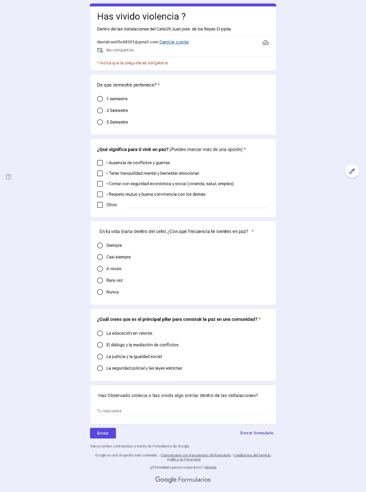
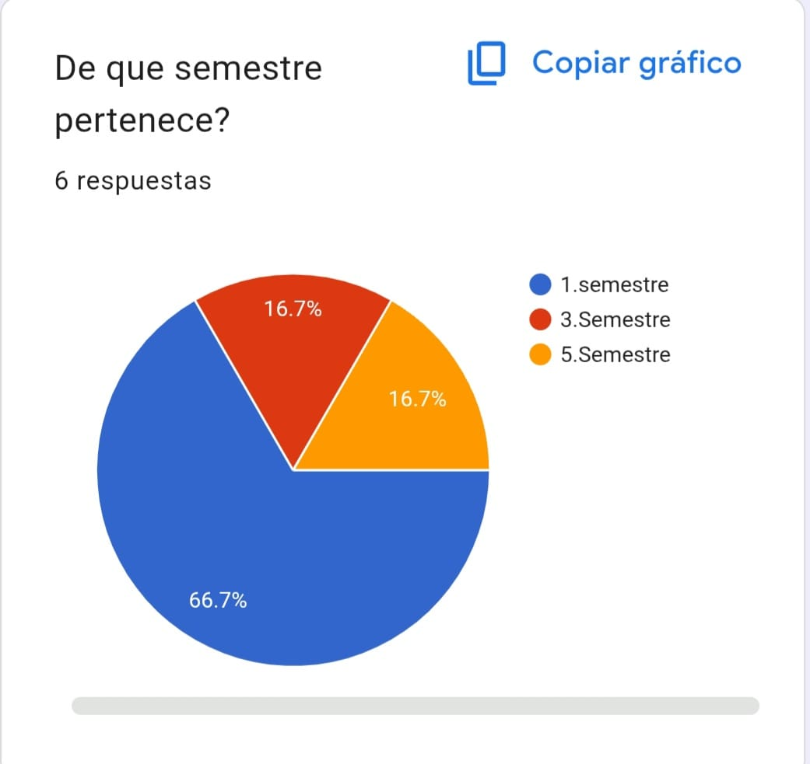
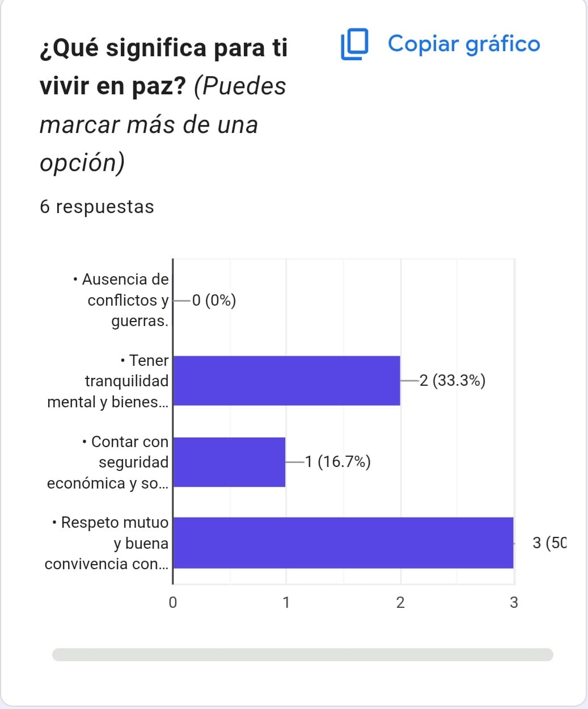
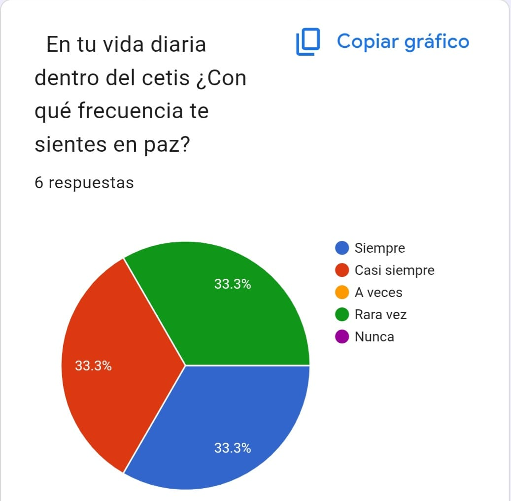
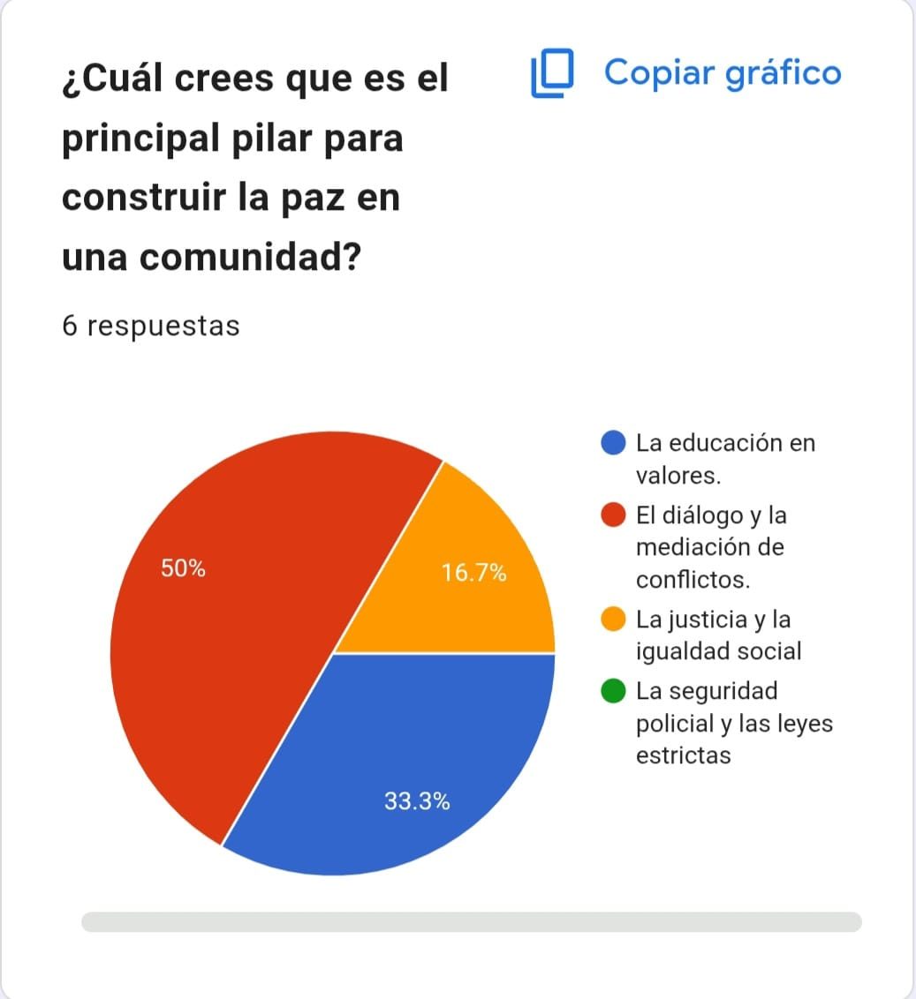
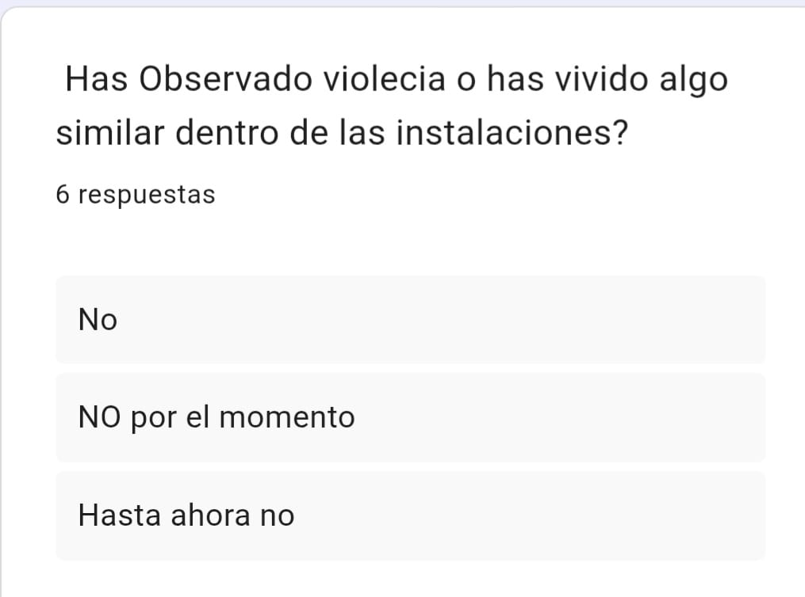

Introducion
En este lapzo de tiempo hemos realizado una investigacion sobre como es la convivencia en el cetis y por eso realizamos una pagina para que se informen y una encuesta

Esta es La encuesta realizada a los Aluumnos Del Cetis Num29

En esta encuesta ns muestra los alumnos de que smestre son

En esta grafica nos muestra que significa a cada alumno del cetis que significa para el vivir en paz

En esta Encuesta nos muertra que frecuencia en su vida cotidiana del cetis como se siente en paz

En esta encuesta nos muestra cual es su principar pilar para construir la paz en la comunidad del cetis

En esta pregunta nos muestra que si han observdo violencia en el cetis o si han experimentado alguna
Conclusiones
En conclusión, la encuesta demuestra que la paz en la escuela no es la ausencia total de problemas, sino la capacidad que tiene la comunidad escolar para detectarlos a tiempo y aplicar herramientas de diálogo, empatía y mediación antes de que escalen a situaciones mayores.
Linea de la vida 800 911 2000